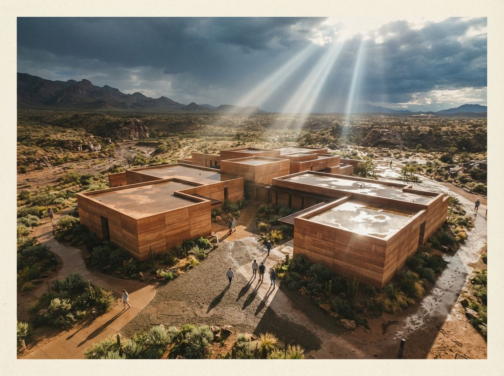

The question shows up every week, phrased almost identically. Someone has a clean-but-flat viewport render, they have heard Flux or Qwen or SDXL can make it photoreal, and they want the settings for a 4K image-to-image pass. The answers pile up underneath, each naming a different model and a different denoise number, and the original poster leaves with six opinions and no working pass. The reason the thread never resolves is that it is arguing about ingredients when the problem is the recipe. A 4K enhancement is three operations, and beginners run them in the order that feels natural, which is the order that breaks.
Stop starting at four K
The first instinct is to load the render at full 4K and run img2img there, because 4K is the goal so 4K is where you work. This is the single most common way the pass goes wrong. Diffusion models were trained at roughly one to one and a half megapixels. Hand one a four-megapixel canvas and it loses the plot at large scale: it renders a convincing brick here and a convincing brick there while forgetting they belong to the same wall, so you get repeated windows, doubled mullions, a facade that tiles. It looks sharp at 100 percent and falls apart when you zoom out.
Resolution is a ladder, not a starting floor. You do the creative work at a resolution the model actually understands, somewhere near 1.5 to 2K on the long edge, where it can hold the whole elevation in one thought. Only once the image is right do you climb to 4K, and you climb with an upscaler, not another full-strength generation. The 4K step is a finishing move that adds pixels and micro-detail. It is not where the render gets made.
The climb itself has a right way. A plain model upscaler doubles the pixel count and cleans edges without reopening the composition, which is what you want for a print-ready elevation. A tiled diffusion upscale can add crisper texture at very large sizes, but it processes the image in patches, and every patch is a fresh chance to invent a detail that does not match its neighbor. If you use one, keep its own denoise floor low, in the 0.1 to 0.2 range, so it sharpens rather than reinterprets. The rule holds all the way up the ladder: the higher the resolution, the less freedom the model gets, because at that size a mistake is no longer a happy accident, it is a seam a client will spot.
Beginners treat 4K as the setting. It is the last step. The render is decided two steps earlier, at a resolution nobody screenshots.
Denoise is the second dial, not the first
Once you are working at a sane resolution, denoise strength is the dial that does the most damage in the fewest clicks. It is the single number that says how much of your original render the model is allowed to throw away. At 0.2 it polishes. At 0.5 it reinterprets. At 0.7 it has effectively been handed your image as a mood reference and told to paint its own building, which is why the output looks stunning and has a window your drawing does not. For an architect the useful band is narrow and low, usually 0.25 to 0.4, and the exact number is a conversation between denoise and your structure lock, not a value you can copy from a stranger. We have walked that specific trade in its own piece; the point here is only that it is the second decision, made after resolution and before you ever think about the final size.

Lock the structure before you touch strength
The third operation is the one beginners skip entirely, and it is the one that lets you run denoise higher without losing the building. Before the pass, pull a depth or edge map off your render and feed it in as a control signal. Depth holds the massing and the recession of planes. A Canny or line map pins the openings and the roofline. With that scaffold in place, the model can add realism aggressively inside a cage that keeps your geometry where you drew it. Skip it and every point of denoise is a gamble on whether the window stays put.
Notice the dependency. Structure lock is what makes a higher denoise safe, so it has to be decided before you settle the strength, which in turn only makes sense once you are at a resolution the model can read. The three steps are not a menu. They are a sequence, and each one changes what the next is allowed to do.
| Order | The step | Sane default | If you skip or reverse it |
|---|---|---|---|
| 1 | Work at model resolution, upscale last | 1.5 to 2K long edge, then upscale to 4K | Tiling, repeated windows, a facade that doubles itself at scale. |
| 2 | Set structure lock | Depth for massing, Canny or lines for openings | Geometry drifts the moment you raise strength. |
| 3 | Set denoise strength | 0.25 to 0.4 for enhancement, not reinvention | A beautiful render of a building you did not design. |
A first pass you can actually run
Here is the whole thing as one sequence, model-agnostic, because it works the same in Flux, Qwen or SDXL. Downscale your render to about 1920 on the long edge. Extract a depth map and an edge map from the original. Load both as control, depth weighted a little higher than edges. Set denoise to 0.3. Run it. Look at the result at full size and overlay it on the original at half opacity: if the window heads and rooflines still line up, you enhanced it. If they slid, drop denoise by 0.05 or raise the control weight and go again. When the image is right, and only then, send it through an upscaler to 4K for the final detail. That is the pass. The model you picked is the least interesting decision in it.
This is why the forum threads never settle. They are all trading step-three numbers while the person asking has a step-one problem. You can hand someone the perfect denoise value and it will still fail if they are running it at 4K with no control map, and it will still work at a dozen different values if the resolution and the structure lock are right. Order is the setting. Everything else is tuning inside it.
Our take
The tool question is a comfortable place to spend a week because it feels like the answer is one purchase or one download away. It is not. Every capable model will give you a clean architecture enhancement if you feed it a readable resolution, cage it with a control map, and keep denoise low enough to respect the drawing. None of them will save a pass that starts at 4K and leads with strength. Learn the order once and you stop shopping for the tool that fixes your renders, because you become the thing that fixes them. The building you drew survives the pass. That was always the only test.
Written from the 10 August 2026 intel sweep, which surfaced a beginner asking for Flux and ComfyUI settings to run a 4K image-to-image pass on architecture renders. ArchiGen AI carries no sponsored placements.